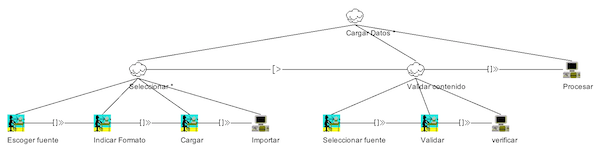
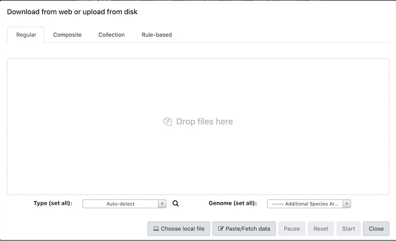

Cargar datos
Alias:ninguno
Nivel de significancia: ***

Fig. 1 Formulario de carga de datos de Bier.app [1].
Problema
-
Cargar conjuntos de datos genéticos disponibles en diferentes fuentes y formatos.
Contexto
-
El usuario carga datos genéticos para iniciar un análisis. Los datos están disponibles en varios formatos (p. ej., ficheros BAM, VCF) o provenir de varias fuentes (local o remoto).
Solución
Proveer un formulario de carga de datos donde el usuario pueda 1) escoger el origen/fuente de datos (recurso en línea, fichero de texto, texto); 2) indicar/especificar el formato del contenido (p.ej., VCF, json, fasta, fastaq. dbsnf.tabular, gff3); 3) Validar el contenido 4) Importar el contenido si los datos son válidos.
En el paso 1, el procesamiento del origen de datos deben considerar aspectos de tamaño (megabytes, gigantes terabytes, etc), accesibilidad (acceso local o remoto), cantidad (número de conjuntos de datos). Si el conjunto de datos se encuentran en uno o varios ficheros locales, permitir al usuario seleccionar los ficheros navegando por el repositorio local. Si el conjuntos de datos se encuentran disponible en la web, el usuario debe poder indicar la URL del recurso. Si el conjunto de datos es textual, el usuario debe poder copiar el contenido y pegarlo en el formulario.
En el paso 3, la validación del contenido la realiza internamente el sistema y los resultados deben ser mostrados en pantalla.
Incluir acciones para procesar la carga de datos tales como: iniciar carga, pausar, parar, pegar (URL o datos). Si es posible, informar en tiempo real al usuario sobre el procesamiento de los datos (avance en la lectura y carga del contenido).
Estructura

Patrones relacionados
-
Asociación: ninguna
-
Agregación: ninguna
-
Especialización: ninguno
Ejemplos

Fig. 2 Formulario de carga de datos de la aplicación Galaxy [1]
Usos Conocidos
VCF Miner [3]
Bibliografía
[1] Bier.app
[2] Galaxy
[3] VCF Miner (http://bioinformaticstools.mayo.edu/research/vcf-miner/)